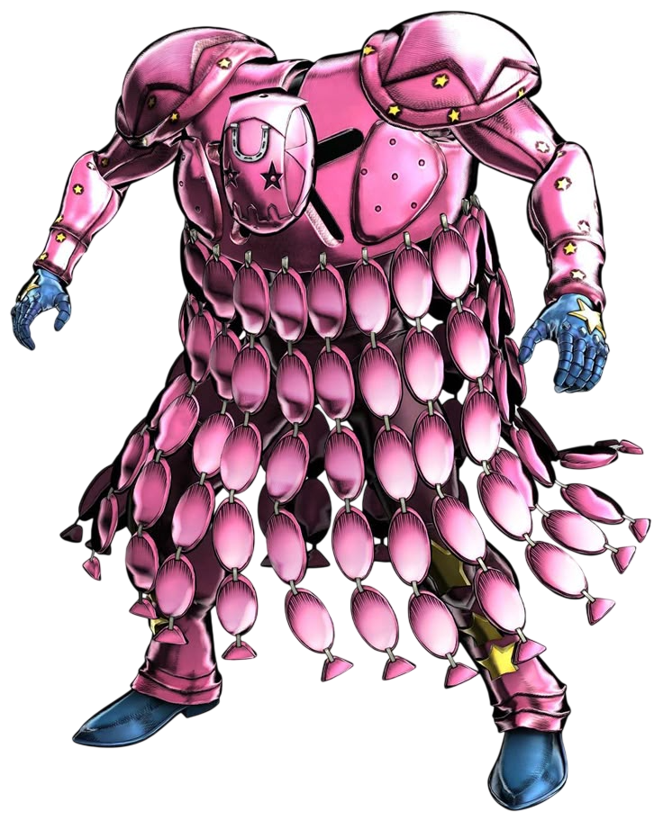

Close-range fighter / Crit / Time Stop
STAR PLATINUM
Punch and Barrage at close range, build Crit chance when hits do not crit, launch enemies on a Crit, and use Star Finger or a 5-second Time Stop.
Open full guide →
A guide for understanding what each system does and when to use it — not just memorizing skill names. Start with Arrows, aiming and levels, then dig into each Stand.

These short descriptions tell you what each Stand is about. Open the full page for numbers, skill rules and practical examples.
Punch and Barrage at close range, build Crit chance when hits do not crit, launch enemies on a Crit, and use Star Finger or a 5-second Time Stop.
Open full guide →
Heavy punches, Barrage, a ranged knife and a 9-second Time Stop. Good if you want simple power with both melee and range.
Open full guide →Use Epitaph to react to a real attack, then Time Dash or Time Erase to escape pressure and return from a better angle.
Open full guide →
Fight to build Restore Gauge, then switch modes to heal allies, repair supported objects, or use Glass Mark/Homing for angled attacks.
Open full guide →
Dash to reposition, pull targets, or spend the shared Space Gauge on ERASE. Strong when you manage the gauge instead of using everything at once.
Open full guide →
Plant First Bomb, choose when to detonate it, and use Sheer Heart Attack for autonomous pressure away from your position.
Open full guide →
Build Speed Gauge by moving, dart in and out of fights, and use Rapier Shot when you need ranged pressure.
Open full guide →
Use ranged fire and area attacks to control groups and lanes, with Fire Control available when the flames become a problem.
Open full guide →
Not a raw-damage Stand. Its strength is choosing a dangerous target, knocking it down and preventing movement for 9 seconds so the team gets time to act.
Open full guide →Each addon adds one Stand while using Project JoJo's shared Arrow, level, targeting, HUD, PvP/Safety and multiplayer systems.

Read attacks, mark souls, then turn contact into RPS, Baseball or Racing instead of relying only on raw damage.
Open full guide →
Manage one shared colony of up to 500 units across combat and Search; the more units you send away, the fewer remain for the fight.
Open full guide →
Open living targets like books, spend REWRITE on commands, and turn zombies into guards, attackers, followers or workers.
Open full guide →These cards are for planned or in-development Stands. They are not considered playable in the public release until they are actually released.

In development / not playable in the public release yet. Skills and details may change before release.

In development / not playable in the public release yet. Skills and details may change before release.

In development / not playable in the public release yet. Skills and details may change before release.

In development / not playable in the public release yet. Skills and details may change before release.

In development / not playable in the public release yet. Skills and details may change before release.
Mouse / Pointer uses cursor direction • Facing Direction uses where the character faces • Controller Aim uses the controller aim/attack axis and falls back to facing direction inside the dead-zone.
Example: If you use Project Viewpoint and do not want to depend on a visible cursor, Facing Direction lets attacks follow the character. Walls and bodies in front still matter.
Choose Normal / Minimal / Hidden, HUD opacity 20–100%, scale 70–150%, and personal Project JoJo volume 0–100%. These are per-player preferences, not server balance settings.
Required gameplay screens such as HARVEST Search, ATUM minigames and Heaven's Door Book/Command remain available even with the passive HUD hidden.
OFF by default. With it off, a Stand Arrow randomly rolls from the loaded Stand Pool. When enabled, using an Arrow opens a choice list made from Stands that are actually registered, including enabled official addons.
Important: Super Arrow changes random selection into direct selection. It does not make the Arrow infinite. The normal 3 successful uses still apply unless Infinite Stand Arrow is also enabled.
Controls how common Stand Arrows are. At the default 1x setting, the base zombie drop is roughly 1 in 250, and Arrows can also appear in world loot.
Changes overall Stand damage for the world/server. Use this when you want Stands stronger or weaker without editing each move separately.
ON = each Stand keeps separate Lv.1–100 progression. OFF = Stands operate at full power while saved progression remains preserved.
Example: Star Platinum Lv.70 and The World Lv.20 are separate. Switching does not erase Star Platinum's Lv.70.
Optionally gives players an Arrow when joining, useful for servers that do not want the whole group farming before they can use the mod.
Normally one Arrow has three successful uses: 3/3 → 2/3 → 1/3 → gone. Infinite Arrow prevents Condition loss after a successful use.
Reset Visual / Audio / Targeting restores HUD mode, opacity, scale, personal volume and targeting without touching keybinds. Reset Keybinds separately restores Caps Lock and Skills 1–4.
Skills use their real reach and check the first valid contact on the attack line. Pointing farther away does not let a move magically skip the body or wall in front.
Supported offensive Barrages can collide when fighters are close enough and genuinely facing/aiming into each other. Colliding hits cancel before normal damage.
Supported Barrages create a forward defense line that can stop specific projectiles such as TW Knife, SC Rapier Shot and CD Glass. Side/rear shots and area effects follow different rules.
SP stops time for 5 seconds and TW for 9. Frozen actors, delayed damage and moving projectiles resume when time starts again.
The two time systems do not stack freely. If Erase started first, incoming Stop duration is spent against remaining Erase time before any leftover becomes real stopped time.
While a registered Stand is summoned, its owner takes 33% less net damage. This is damage reduction, not invulnerability.
Player HP damage respects Project Zomboid PvP/Safety. Some utility/CC effects have separate rules, so check a Stand page before testing pulls, freezes or repositioning on friends.
Attacks still respect vehicles and world collision, while safeguards prevent rapid Stand hits from corrupting unsupported vehicle/custom-object state.
Hardened Search audio for SP / Host / Multiplayer • Search cues are keyed per job so simultaneous jobs can play the same cue without suppressing each other • Outbound / return / talk / delivery audio follows the actual Search-job Harvest position • RECALL/cancellation immediately stops that job’s active Search audio • Search formulas and balance are unchanged.
Polished the HARVEST SEARCH COMMAND layout • Quantity/Crew values are vertically and horizontally centered • Step and preset buttons use aligned grids • EST. TIME / TOTAL WEIGHT are separated into summary cards • START SEARCH spans a clean full row • Active Job rows reserve space for RECALL so text no longer overlaps • Search formulas and balance are unchanged.
Removed the unused legacy Search path from the addon • Skill 3 now sends item, quantity and assigned Harvest directly from HARVEST SEARCH COMMAND to authority • Removed the old right-click Mark/Quantity path, inventory pin, task HUD hooks and obsolete network commands • Search formulas and balance are unchanged from v0.4.6.
Reworked Skill 3 into a large HARVEST SEARCH COMMAND UI • Inventory templates, requested quantity, assigned Harvest crew, estimated time and active Search jobs now live in one screen • Added per-job RECALL with immediate reserved-Harvest return • Removed the inventory right-click Search controls, Skill 3 xN marker and Search task/X icons from the normal Stand HUD.
Added a red cancel button beside the active Search task icon/ETA • Hover shows the cancel hint • Left-click cancels only the displayed Search job and immediately returns that job’s reserved Harvest • Cancellation is authority-side for SP / Host / Multiplayer to prevent duplicate refunds.
SEARCH ITEM gained Batch Search x1–x500 • x1–x20 requires at least 20 Harvest, while x21–x500 requires a minimum crew equal to requested quantity • Search time scales with item count and transport burden uses total batch weight • Added inventory +/- quantity controls, xN beside the Skill 3 star, and real multi-item delivery.
SEARCH ITEM minimum reduced from 50 → 20 Harvest • 20 units are the 1.0× baseline Search speed • 100 / 200 / 350 / 500 remain about 1.8× / 3.27× / 5.14× / 7.2× • Reserved Search crews still lower the regeneration ceiling until they return.
At the default 100% Sandbox setting, swarm regeneration became 0.80/s while still • 4.05/s seated or in a vehicle • 9.00/s while Resting • 14.40/s while Sleeping • A 100-unit Search caps regeneration at 400/500 and the HUD shows a red -100.
Reduced the minimum commitment for NEEDLE SWARM and HARVEST STORM to 7 / 33 while remapping their minimum effect near the older baseline and preserving smooth scaling up to 500.
Added Harvest Regeneration Speed Sandbox tuning from 25–500%, default 100% • It changes regeneration only, never Search speed and never the reservation-aware regeneration ceiling.
HARVEST SHOT and HARVEST STORM gained Barrage Guard support • Storm checks guarding players individually, blocking only that player’s hit without cancelling the whole Storm.
PvP Baseball: if the Pitcher does not choose HIGH / MIDDLE / LOW before timeout, the server auto-randomizes a pitch and continues instead of awarding ATUM an immediate win • The randomized pitch is locked before GAMBLE READ, so YES/NO Prediction reads it normally • Audited RPS / Baseball / Racing multiplayer input flows.
Racing Launch Mash can accumulate rapid Slot 1 taps from the first Racing screen instead of waiting for READY • Twisted all 12 Barrage clone arms around their longitudinal axis so the fist orientation is natural with the thumb on top, without changing timing / fan / UV / animation.
YES / NO presentation became mouse-through so minigame controls remain clickable • Racing vehicle KOs/off-road losses fade the losing car out and require the survivor to cross the finish line • READY Launch Mash scales launch speed with tap count using diminishing returns and a cap • Minigame Phase/Protection hides participants from remote clients without Clone/Decoy • Simultaneous double KO/off-road = Draw
Added Winner’s High for the human minigame winner: Stress −4% • Unhappiness −5 • Boredom −6 • Panic −5 • Works for wins against zombies or players without restoring Hunger / Thirst / Fatigue / Sickness / injuries.
Added the Skill 3/4 Cross Combo • FULL-hold S4 toggles AUTO GAMBLE PASSIVE and locks tap-S4 until disabled • S4 Passive + tap-S3 automatically challenges the attacker when DODGE READ succeeds • FULL S3 + tap-S4 uses YES/NO Prediction.
Split Skill 3 into Tap = DODGE READ and FULL Hold = GAMBLE READ • Only one read mode can be armed at once • Manually cancelling an unused read before timeout refunds +1 Mind Point • Triggered/consumed/expired reads are not refunded.
ATUM addon baseline: Punch / Barrage / Mind Reading / Gamble • Mind Gauge 0–100 • Rock Paper Scissors, Baseball and Racing minigames • SP / Host / Multiplayer through Project JoJo’s shared systems.
Real-range First-Contact • 240 ms Barrage contact grace / up to 3 catch-up hits • TH Pull 21.875 tiles • Echoes Barrage 0.026 → 0.060 • Barrage Guard for SP/TW/CD/SC/KC
Directional First-Contact aiming and live Barrage steering.
SP / Host / MP core-load hotfix and duplicate-event guards.
MP fixes for pending attacks, Time Stop, PvP target filtering, downed/crawling hit capsules, TH Pull pose and KC clone.
SP/TW/KC Time Dash ×2.5 • MR Fireball became free and grants +4 Gauge on a real hit • CD offensive Restore gain reduced by 40%.